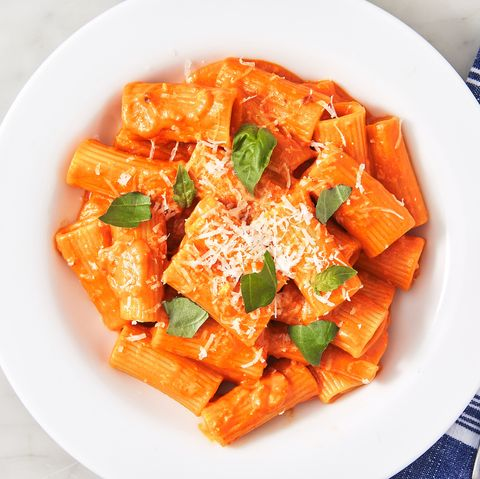

Bon Appetit's Vodka Sauce Rigatoni

Description
Another easy weeknight dish. Very rich and delicious without requiring overly
complicated techniques or ingredients.
Source
Ingredients
- 1 medium yellow onion, diced
- 4 garlic cloves, diced
- 8 oz tomato paste
- 2 oz vodka
- 1/4 pasta water
- 3/4 cup heavy whipping cream (or non-dairy alternative)
- red pepper flakes, salt, and pepper to taste
- 1/3 cup olive oil
- 1/2 cup freshly grated Parmesan cheese
Steps
- Fill pot of water with water. Bring to a boil and add rigatoni. Set aside pasta water for later. Cook until al-dente.
- Add olive oil, onion, garlic and optionally red pepper flakes to a Dutch oven. Cook until onion is translucent, about 7 minutes.
- Add and stir in tomato paste, cook until darkened and beginning to stick to bottom of pan.
- Deglaze pan by adding in vodka sauce, making sure to scrape up tomato paste stuck to pan.
- Combine heavy whipping cream and hot pasta water. Slowly stir into pan until combined.
- Add Parmesan cheese and salt to taste. Add rigatoni to sauce. Add pasta water until desired consistency is reached.
- Divide amonst plates. Enjoy!